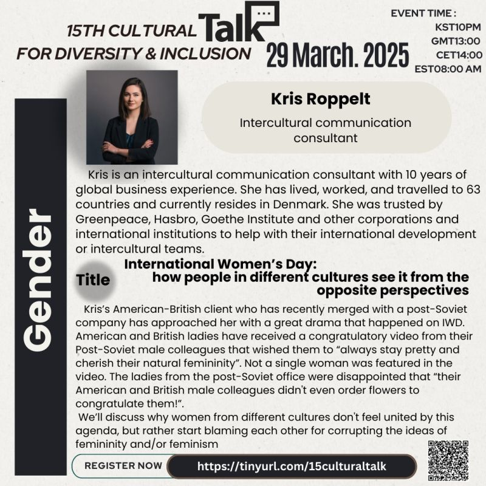
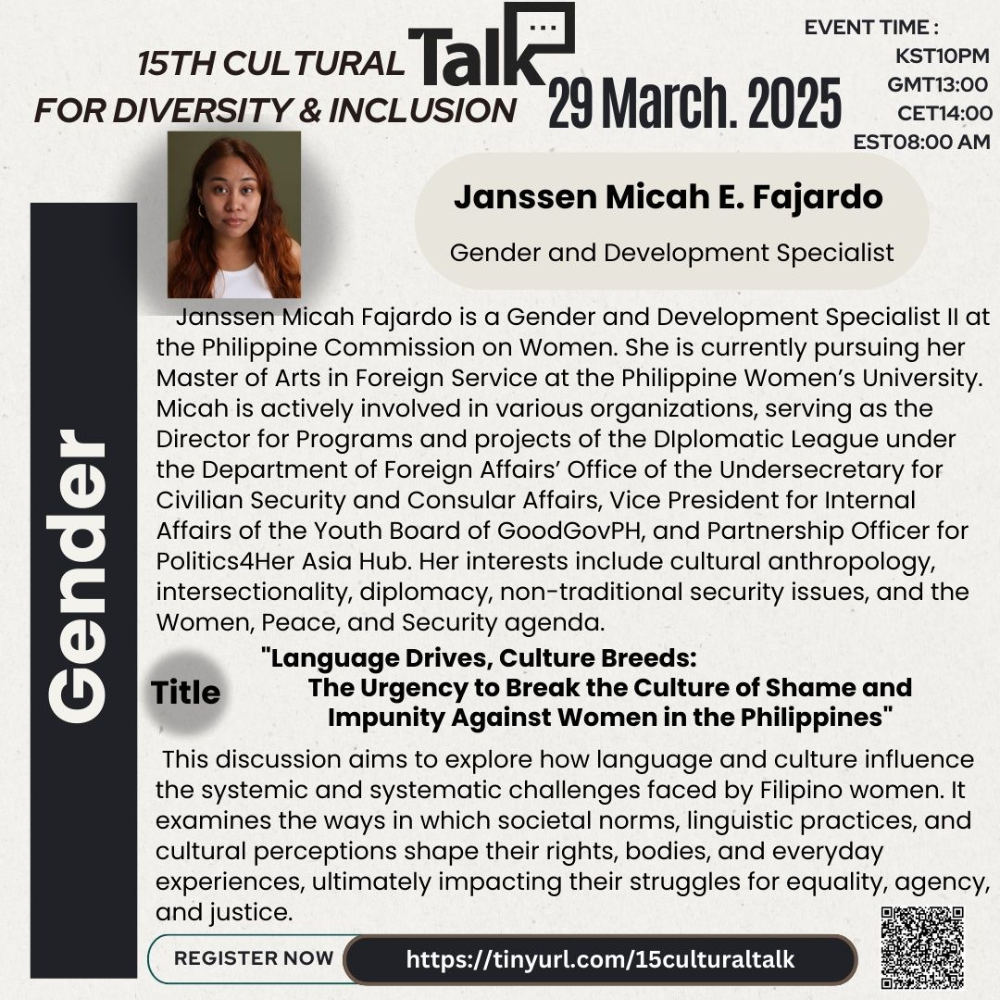

15th Cultural Talk For Diversity
Theme: Women

Event Details
Date: 29 March, 2025
Time: 22:00 (KST) / 13:00 (GMT) / 14:00 (CET) / 09:00 (EST)
This event has already taken place and is now part of our archive.
Conference Overview
Held in connection with International Women’s Day, this session explored women’s issues from diverse cultural perspectives. It invited participants to examine how cultural assumptions, language, and social norms can shape gender debates in very different ways while still pointing toward shared concerns around dignity, equality, and justice.

Kris Roppelt
Intercultural Communication Consultant
Kris Roppelt is an intercultural communication consultant with a decade of global business experience. Having lived, worked, and traveled across dozens of countries, she helps organizations and teams navigate international development and intercultural collaboration.
Topic: International Women’s Day: How People in Different Cultures See It from Opposite Perspectives
This talk examined how people from different cultural backgrounds can understand women’s issues, femininity, and feminism in sharply contrasting ways. Using a real intercultural workplace conflict as an example, it highlighted how the same holiday can evoke very different expectations and reactions.

Janssen Micah E. Fajardo
Gender and Development Specialist II, Philippine Commission on Women
Janssen Micah Fajardo is a Gender and Development Specialist II at the Philippine Commission on Women and is pursuing a Master of Arts in Foreign Service. Her work and interests span cultural anthropology, intersectionality, diplomacy, non-traditional security issues, and the Women, Peace, and Security agenda.
Topic: Language Drives, Culture Breeds: The Urgency to Break the Culture of Shame and Impunity Against Women in the Philippines
This session explored how language and culture can reinforce systemic challenges faced by Filipino women. It examined how norms, linguistic practices, and cultural perceptions affect women’s rights, everyday experiences, and struggles for agency, equality, and justice.